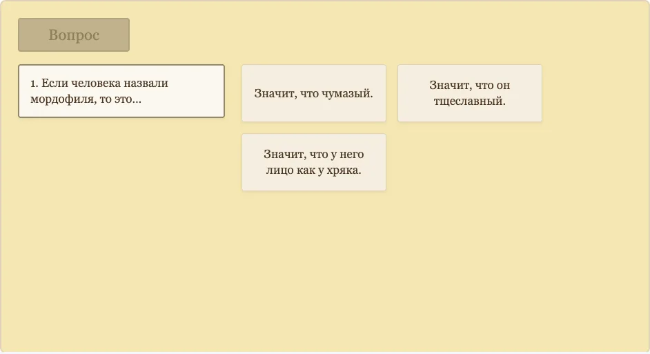
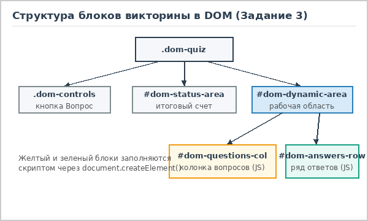
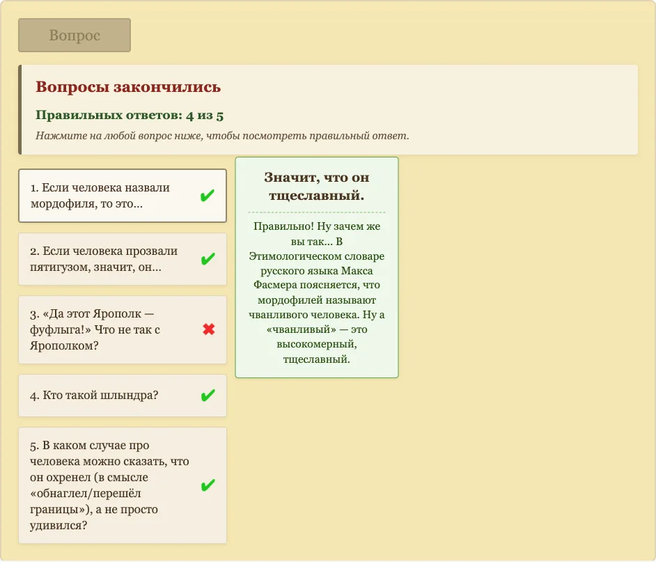

Задание 3. Интерактивный DOM-тест "Ругательства" (вариант 2)
Третья лабораторная работа объединяет верстку и программирование на JavaScript. Нужно было сделать интерактивную викторину про старинные русские бранные слова, где все карточки вопросов, варианты ответа и блок результатов генерируются скриптом прямо в дереве документа (DOM).
Результат работы
Нажимайте кнопку "Вопрос", чтобы получить новое задание, и выбирайте правильное значение старинного слова:
Логика работы викторины

При загрузке страницы скрипт dom-test.js берет массив вопросов и сразу перемешивает его
алгоритмом Фишера - Йетса (и заодно перемешивает варианты ответа внутри каждого вопроса). За счет этого
при каждом обновлении страницы вопросы идут в новом порядке, и нельзя просто запомнить, что правильный
ответ всегда стоит первым.
Когда пользователь нажимает на кнопку "Вопрос", в левую колонку добавляется пронумерованный блок с текстом
вопроса, а в правой части в ряд выстраиваются три карточки с вариантами ответа. Сама кнопка "Вопрос" на это
время блокируется через disabled = true, чтобы нельзя было накликать сразу весь список вопросов,
не ответив на текущий.

Если выбран правильный ответ, рядом с вопросом в левой колонке рисуется зеленая галочка, а сама карточка ответа плавно увеличивается и открывает скрытый блок с подробным словарным пояснением. Спустя две секунды неправильные карточки по очереди уезжают вниз за границу блока, а следом за ними уходит и правильная. Если же ответить неверно, карточка сначала немного трясется из стороны в сторону, возле вопроса ставится красный крестик, и все три варианта так же поочередно скрываются вниз.
Как устроена работа с DOM и стилями

В самом HTML-файле внутри блока .dom-quiz лежат только пустые контейнеры-заготовки:
#dom-questions-col для левой колонки вопросов и #dom-answers-row для правой
области ответов. Все внутренние карточки скрипт создает на лету через document.createElement('div')
и наполняет текстом с помощью свойства textContent. Использование textContent вместо
innerHTML - хорошая привычка, потому что браузер воспринимает любую строку строго как текст,
что пригодится при подключении серверной части.
Вся визуальная анимация вынесена в файл dom.css, а JavaScript только вовремя переключает
классы через element.classList.add(): например, класс .dom-shake включает анимацию
тряски, .dom-correct-expanded увеличивает карточку с пояснением, а .dom-move-down
уводит отработанные ответы вниз с плавной задержкой transitionDelay.

Когда все вопросы из массива пройдены, сверху открывается блок #dom-status-area с надписью
"Вопросы закончились" и подсчитанным результатом (сколько ответов оказалось верными из общего числа).
После этого включается режим просмотра: можно нажать мышкой на любую строчку вопроса в левой колонке,
и справа отобразится карточка с правильным ответом и пояснением, которые были сохранены в
dataset-атрибутах этого вопроса.